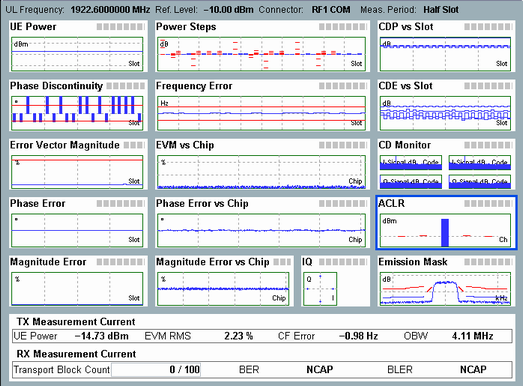

Overview
In the overview a selection of the following results can be displayed:
- Error vector magnitude (multislot and vs chip)
- Magnitude error (multislot and vs chip)
- Phase error (multislot and vs chip)
- I/Q constellation diagram
- Phase discontinuity
- Frequency error
- UE power
- Power steps
- Code domain monitor (CDM)
- Code domain power (CDP) vs slot
- Code domain error (CDE) vs slot
- Relative CDE vs slot
- ACLR
- Spectrum emission mask
- Most important results of detailed views TX measurement and RX measurement
See also: "TX Measurements"

WCDMA multi-evaluation: overview
The results to be measured and displayed in the overview can be limited using the hotkey "Assign Views", see "Assign Views (Hotkey)".
You can enlarge one of the diagrams in the overview and show a detailed view with additional measurement results, see "Selecting and Modifying Views".
The traces and bar graphs are described in the "Detailed Views" sections.